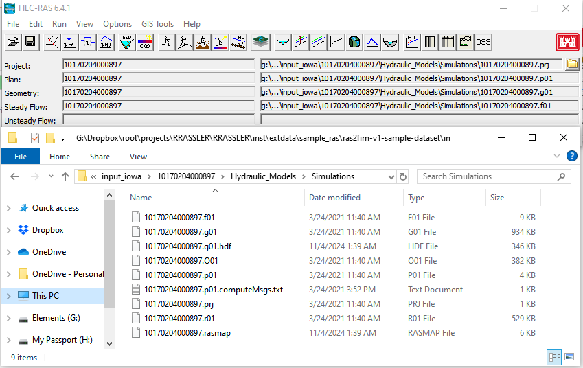
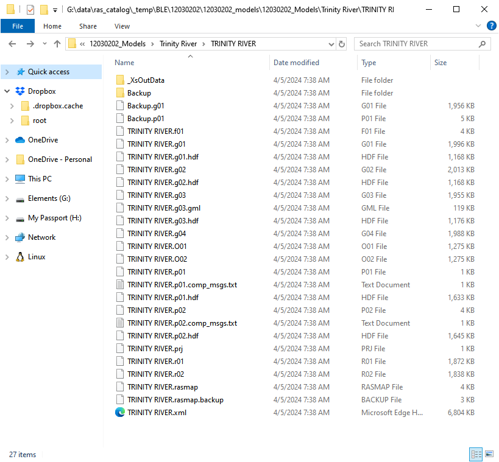
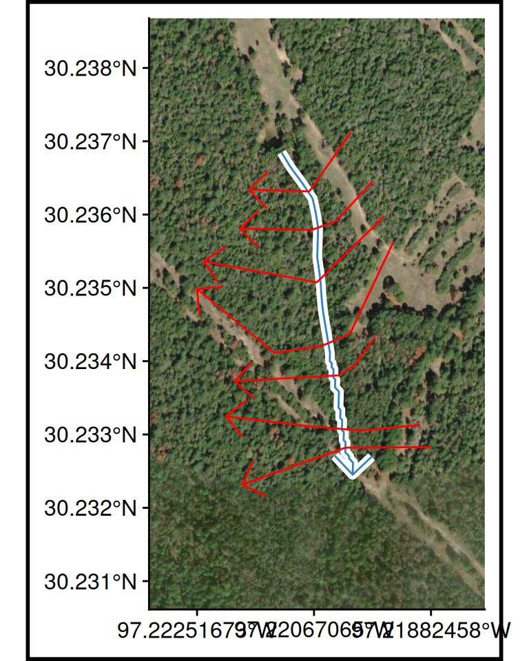
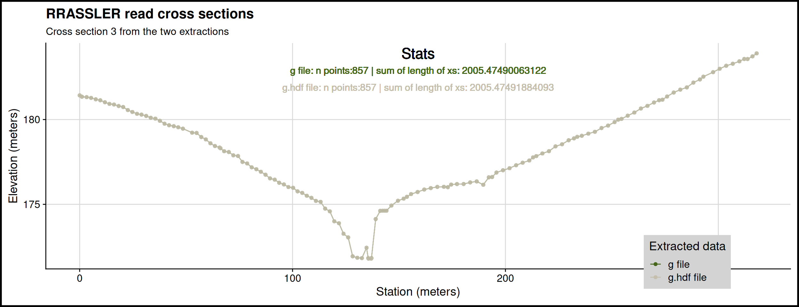

Orienting to One Dimension
HEC-RAS conventions
Cross sections should be laid out perpendicular to where water will flow in the channel and overbank areas. Therefore, most cross section lines should be created from a minimum of four points (the end points and points at the edge of the main channel). Cross sections will also be visualized when looking in the downstream direction; therefore, they should be created from left to right when looking downstream (RAS Mapper will automatically flip the line to have the correct orientation).


Refresher: The HEC-RAS model format
A “real-world” example
Files to Track
| File grep Pattern (# denotes single numeric wildcard) | HEC-RAS Model Use |
|---|---|
| .g## | Geometry definitions |
| .prj | Projection (can be non-standard proj4 string defined file) |
| .prj | Project (same extension, defines how RAS models are wired) |
| .p## | Plan file, used to drive the model |
| .f## | Steady Flow file. Profile information, flow data and boundary conditions |
| .h## | Hydraulic Design data file |
| .v## | Velocity file |
| .o## | Output file |
| .r## | Run file for steady flow |
| .u## | unsteady Flow file. Profile information, flow data and boundary conditions |
| .x## | Run file for unsteady flow |
| .dss | Data files |
| .rasmap | Output plan |
These files, followed by a .hdf, are transformations of their counterparts needed for newer versions of HEC-RAS and are automatically created as needed.



Data “checkpoints”
RRASSLER copy files
Files extract consistently
.g## file

.g##.hdf file


Data “checkpoints”
Copy data
Model testing: ALUM 114.prj